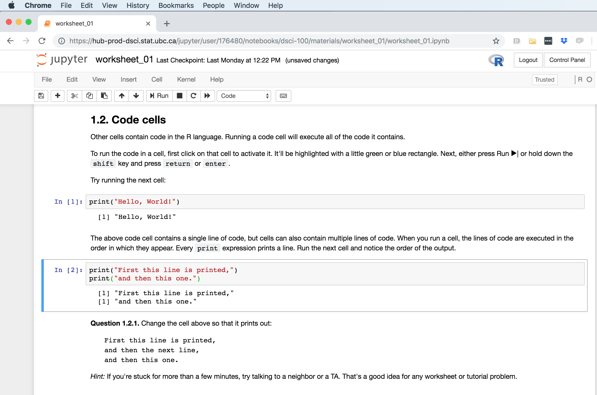

Introduction to Data Science
2019-01-13
Chapter 1 Introduction to Data Science
This is an open source textbook aimed at introducing undergraduate students to Data Science. It was originally written for the University of British Columbia’s DSCI 100 - Introduction to Data Science course.
This course uses Jupyter and the R programming language to illustrate how to solve 3 common problems in Data Science:
- Predicting a class/category for a new observation/measurement (e.g., cancerous or benign tumour)
- Finding previously unknown/unlabelled subgroups in your data (e.g., products commonly bought together on Amazon)
- Predicting a value for a new observation/measurement (e.g., 10 km race time for 30-35 year old males with a BMI > 25).
This book/course is structured so that learners spend the first four chapters learning how to use R to load, wrangle/clean and plot data. The remaining 4 chapters cover solutions to the three solutions provided above.
1.1 Chapter learning objectives
By the end of the chapter, students will be able to:
- use a Jupyter notebook to execute provided R code
- edit code and markdown cells in a Jupyter notebook
- create new code and markdown cells in a Jupyter notebook
- load the
tidyverselibrary into R - create new variables and objects in R using the assignment symbol
- use the help and documentation tools in R
- match the names of the following functions from the
tidyverselibrary to their documentation descriptions:read_csvselectmutatefilterggplotaes
- chain together two functions using the pipe operator,
%>%
1.2 Jupyter notebooks
Jupyter Notebooks are documents that contain a mix of computer code (and its output) and formattable text. Given that they can mix these two things in a single document (code is not separate from the output or written report), they are one of the leading tools to create reproducible data analysis. The name Jupyter came from combining the names of the three programming language that it was initially targeted for (Julia, Python, and R), and now many other languages can be used with Jupyter notebooks.
A notebook looks like this:

We have created a short demo video to help you get started and introduce you to Jupyter:
However, the best way to learn how to write and run code and formattable text in a Jupyter notebook is to do it. So we have also created this worksheet as a step-by-step guide through it: https://github.com/UBC-DSCI/dsci-100/blob/master/materials/worksheet_01/worksheet_01.ipynb
1.3 Loading a tabular dataset
Often, the first thing we need to do in data analysis is to load a dataset into R. Once we get our data into R, we would like to work with it as a data frame object. You can think of data frames as a spreadsheet-like object, where the rows are the observations collected/measured and the columns are the variables.
The first data set we will work with is in a comma-separated file, or .csv, format. There are many functions available in R we could use to load a .csv file, but we are going to use read_csv() from the tidyverse package because it is fast it creates a “special” variant of the base R data frame object with several nice properties we’ll discuss in further detail later in the course.
In it’s most basic use case, read_csv() expects that:
- column names are present
,is the delimiter/separator- there are no row names in the dataset
Let’s explore how to do this! We will load a .csv file named “state_property_data.csv” that is in the same directory/folder as our notebook/script. This data file is from https://datausa.io/ and has US state-level property, income and population data from 2015. If we were to open this data in a plain text editor, it would look like this:
state,med_income,med_prop_val,population,mean_commute_minutes
AK,64222,197300,733375,10.46830207
AL,36924,94800,4830620,25.30990746
AR,35833,83300,2958208,22.40108933
AZ,44748,128700,6641928,20.58786
CA,53075,252100,38421464,23.38085172Here we now load the data into R. To do this, we first need to load the tidyverse library. We do this using the library function. Next we call the read_csv() and pass it a single argument, the path to the file - “state_property_data.csv” - as a string. This is the only argument we need to provide for this file because it satisfies the default arguments of the read_csv function that we just discussed. Later in the course, we’ll learn more about how to deal with files where the default arguments are not appropriate, for example tab separated files or files with no headers.
library(tidyverse)
read_csv("state_property_data.csv")# A tibble: 52 x 5
state med_income med_prop_val population mean_commute_minutes
<chr> <dbl> <dbl> <int> <dbl>
1 AK 64222 197300 733375 10.5
2 AL 36924 94800 4830620 25.3
3 AR 35833 83300 2958208 22.4
4 AZ 44748 128700 6641928 20.6
5 CA 53075 252100 38421464 23.4
6 CO 48098 198900 5278906 19.5
7 CT 69228 246450 3593222 24.3
8 DC 70848 475800 647484 28.3
9 DE 54976 228500 926454 24.5
10 FL 43355 125600 19645772 24.8
# ... with 42 more rows1.4 Assigning value to an object
When we loaded the US state-level property, income and population data in the last slide using read_csv(), we did not assign the output of this function to an object, so it was merely printed to the console and not stored anywhere. This is not that useful - what we would like to do is assign the output of the read_csv() function, a data frame, to an object so that we can use it later for analysis and visualization.
To assign value to an object in R, there are two possible ways - using either the assignment symbol or the equals symbol (as is done in Python). From a style perspective, the assignment symbol is prefered and is what we will use in this course.
Do note however, that the assignment symbol has a very different meaning with function argument definitions and is only used in special cases. In general, we use the equals symbol during function argument definitions.
Let’s now use the assignment symbol to store the US state-level property, income and population data in a data frame object that we call prop_data.
prop_data <- read_csv("state_property_data.csv")
print(prop_data)To preview the prop_data object, we can use the print() function.
# A tibble: 52 x 5
state med_income med_prop_val population mean_commute_minutes
<chr> <dbl> <dbl> <int> <dbl>
1 AK 64222 197300 733375 10.5
2 AL 36924 94800 4830620 25.3
3 AR 35833 83300 2958208 22.4
4 AZ 44748 128700 6641928 20.6
5 CA 53075 252100 38421464 23.4
6 CO 48098 198900 5278906 19.5
7 CT 69228 246450 3593222 24.3
8 DC 70848 475800 647484 28.3
9 DE 54976 228500 926454 24.5
10 FL 43355 125600 19645772 24.8
# ... with 42 more rows1.5 Subsetting data frames with select & filter
Now, we are going to learn how to select subsets of data from a data frame in R using the tidyverse functions select() and filter(). select() allows you to subset columns of a data frame, while filter() allows you to subset rows with specific values.
Before we start using select() and filter(), let’s take a look at the US state-level property, income and population data again to familiarize ourselves with it. We will do this by printing the data we loaded earlier in the chapter to the screen.
print(prop_data)# A tibble: 52 x 5
state med_income med_prop_val population mean_commute_minutes
<chr> <dbl> <dbl> <int> <dbl>
1 AK 64222 197300 733375 10.5
2 AL 36924 94800 4830620 25.3
3 AR 35833 83300 2958208 22.4
4 AZ 44748 128700 6641928 20.6
5 CA 53075 252100 38421464 23.4
6 CO 48098 198900 5278906 19.5
7 CT 69228 246450 3593222 24.3
8 DC 70848 475800 647484 28.3
9 DE 54976 228500 926454 24.5
10 FL 43355 125600 19645772 24.8
# ... with 42 more rowsWhen peak at the data frame we see there are 5 columns: 1. US state abbreviation 2. Median household income 3. Median property value 4. US state population 5. Mean communte time in minutes
There are 52 rows in this dataset (corresponding to the 51 US states and the US territory, Puerto Rico).
Let’s use select() to subset the state column from this data frame. To use select() to subset the state column, we’ll provide the function with two arguments. The first argument is the name of the data frame object, here prop_data. The second argument is the column name that we want to subset, here state. select() returns a single column (the state column that we asked for) as a data frame object.
select(prop_data, state)# A tibble: 52 x 1
state
<chr>
1 AK
2 AL
3 AR
4 AZ
5 CA
6 CO
7 CT
8 DC
9 DE
10 FL
# ... with 42 more rows1.5.1 Using select to subset multiple columns
We can also use select() to subset multiple columns. Again, the first argument is the name of the data frame. Then we list all the columns we want as arguments separated by commas. Here the list was three columns: state, median property value and mean commute time in minutes.
select(prop_data, state, med_prop_val, mean_commute_minutes)# A tibble: 52 x 3
state med_prop_val mean_commute_minutes
<chr> <dbl> <dbl>
1 AK 197300. 10.5
2 AL 94800. 25.3
3 AR 83300. 22.4
4 AZ 128700. 20.6
5 CA 252100. 23.4
6 CO 198900. 19.5
7 CT 246450. 24.3
8 DC 475800. 28.3
9 DE 228500. 24.5
10 FL 125600. 24.8
# ... with 42 more rows1.5.2 Using select to subset a range of columns
We can also use select() to subest a range of columns using the colon. For example, to get all the columns from state to med_prop_val we provide the second arugument to select() as state:med_prop_val.
select(prop_data, state:med_prop_val)# A tibble: 52 x 3
state med_income med_prop_val
<chr> <dbl> <dbl>
1 AK 64222. 197300.
2 AL 36924. 94800.
3 AR 35833. 83300.
4 AZ 44748. 128700.
5 CA 53075. 252100.
6 CO 48098. 198900.
7 CT 69228. 246450.
8 DC 70848. 475800.
9 DE 54976. 228500.
10 FL 43355. 125600.
# ... with 42 more rows1.5.3 Using filter to subset a single column
We can use the filter() function to subset rows with desired values from a data frame of interest. Again, our first argument is the name of the data frame object, prop_data. The second argument is a logical statement to filter the rows, here we say that we are interested in rows where state equals NY (for New York).
Filter returns a data frame object that has all the columns of the input data frame but with only the rows we asked for in our filter statement.
filter(prop_data, state == "NY")# A tibble: 1 x 5
state med_income med_prop_val population mean_commute_minutes
<chr> <dbl> <dbl> <int> <dbl>
1 NY 50839. 134150. 19673174 24.41.5.4 Using filter to get rows with values above a threshold
If we are interested in finding information about the states who have a longer mean commute time than New York, whose mean commute time is 21.5 minutes, then we can provide an expression to filter to obtain rows where the value of mean_commute_minutes is greater than 21.5.
We see that filter() returns to use a data frame with 33 rows indicating that there are 33 states with longer commute times on average than New York.
filter(prop_data, mean_commute_minutes > 21.5)# A tibble: 33 x 5
state med_income med_prop_val population mean_commute_minutes
<chr> <dbl> <dbl> <int> <dbl>
1 AL 36924. 94800. 4830620 25.3
2 AR 35833. 83300. 2958208 22.4
3 CA 53075. 252100. 38421464 23.4
4 CT 69228. 246450. 3593222 24.3
5 DC 70848. 475800. 647484 28.3
6 DE 54976. 228500. 926454 24.5
7 FL 43355. 125600. 19645772 24.8
8 GA 37865. 101700. 10006693 24.5
9 IL 47898. 97350. 12873761 22.6
10 IN 47194. 111800. 6568645 23.5
# ... with 23 more rows1.6 Combining functions using the pipe operator: %>%
Now we will learn about an efficient way to combine functions in R; the pipe operator %>%. You can think of the pipe as a physical pipe - taking the output from the expression on the left-handside of the pipe and passing it as the input to first expression on the right-handside of the pipe. Let’s look at some examples of this.
1.6.1 Using %>% to combine filter and select
Remembering our prop_data data frame:
print(prop_data)# A tibble: 52 x 5
state med_income med_prop_val population mean_commute_minutes
<chr> <dbl> <dbl> <int> <dbl>
1 AK 64222 197300 733375 10.5
2 AL 36924 94800 4830620 25.3
3 AR 35833 83300 2958208 22.4
4 AZ 44748 128700 6641928 20.6
5 CA 53075 252100 38421464 23.4
6 CO 48098 198900 5278906 19.5
7 CT 69228 246450 3593222 24.3
8 DC 70848 475800 647484 28.3
9 DE 54976 228500 926454 24.5
10 FL 43355 125600 19645772 24.8
# ... with 42 more rowsIf we would like to subset the values for median income and median property value for the state of California (“CA”), we can use the functions filter() and select() to do this. First we use filter() to create a data frame object called ca_prop_data that only contains the values for the state of California. We can then use select() on this data frame to subset the values for median income and median property value for California:
ca_prop_data <- filter(prop_data, state == "CA")
select(ca_prop_data, med_income, med_prop_val)# A tibble: 1 x 2
med_income med_prop_val
<dbl> <dbl>
1 53075. 252100.Although this is a valid approach, there is a more efficient and readable approach we could take by using the pipe. With the pipe, we do not need to create an intermediate object to store the output from filter(), instead we can use the pipe to directly send the output of filter() to the input of select():
filter(prop_data, state == "CA") %>% select(med_income, med_prop_val)# A tibble: 1 x 2
med_income med_prop_val
<dbl> <dbl>
1 53075. 252100.But wait? Why does our select() function call look different in these two examples? Well, when you use the pipe, the output of the function on the left is automatically provided as the value for the first argument for the function on the right, and thus you do not specify the value for that argument in that function call.
As you can see, both of these approaches give us the same output but the second approach is more efficient and readable.
1.6.2 Using %>% with more than two functions
The %>% can be used with any function in R. Additionally, we can pipe together more than two functions. In this example, we will pipe together 3 functions to get the values for median income and which presidential party the states of Washington DC and Mississippi voted for in the 2016 US presidential election.
To do this, we will load another dataset that contains the party each state voted for in the 2016 US presidential election and join that dataset to our US state-level property, income and population dataset. We will use the read_csv()) function, as we did earlier in the chapter, to load this data set.
vote_data <- read_csv("2016_presidential_election_state_vote.csv")
print(vote_data)# A tibble: 51 x 2
party state
<chr> <chr>
1 republican AL
2 republican AK
3 republican AZ
4 republican AR
5 democrat CA
6 democrat CO
7 democrat CT
8 democrat DE
9 democrat DC
10 republican FL
# ... with 41 more rowsGiven that both data sets have a “state” column, we can join the two datasets on that column using the left_join() function in R. From this larger, joined dataset, we will now be able to filter() and select() the values for median income and which presidential party the states of Washington DC and Mississippi voted for in the 2016 US presidential election.
left_join(prop_data, vote_data, by = "state")# A tibble: 52 x 6
state med_income med_prop_val population mean_commute_minutes party
<chr> <dbl> <dbl> <int> <dbl> <chr>
1 AK 64222 197300 733375 10.5 republican
2 AL 36924 94800 4830620 25.3 republican
3 AR 35833 83300 2958208 22.4 republican
4 AZ 44748 128700 6641928 20.6 republican
5 CA 53075 252100 38421464 23.4 democrat
6 CO 48098 198900 5278906 19.5 democrat
7 CT 69228 246450 3593222 24.3 democrat
8 DC 70848 475800 647484 28.3 democrat
9 DE 54976 228500 926454 24.5 democrat
10 FL 43355 125600 19645772 24.8 republican
# ... with 42 more rowsWe can pipe the output of our join to filter() and the rows for the states of New York and South Dakota. We can filter() on two states by using the or operator. Again, we can use the pipe to send the output of filter() to select(), and use select() to finally subset the values from the state, median income and party voted for columns.
left_join(prop_data, vote_data, by = "state") %>%
filter(state == "DC" | state == "MS") %>%
select(state, med_income, party)# A tibble: 2 x 3
state med_income party
<chr> <dbl> <chr>
1 DC 70848. democrat
2 MS 33748. republican1.7 Creating Visualizations in R
Creating data visualizations is an essential piece to any data analysis. For the remainder of Chapter 1, we will learn how we can use some of the tidyverse functions to make visualizations to explore the relationship between median household income and median propery value across US states, as well as how this relates to which party each state voted for in the 2016 US election.
1.7.1 Using ggplot to create a scatter plot
First, take another look at the dataset we have been focusing on - the US state-level property, income and population data from 2015. We can see that there is a row/observation for each state. And the two variables we are interested in visualizing, median household income and median property value, are each in separate columns - thus the data are what we call a tidy data format. This is really important for ggplot() and many of the other tidyverse functions (as you will learn more in later chapters).
print(prop_data)# A tibble: 52 x 5
state med_income med_prop_val population mean_commute_minutes
<chr> <dbl> <dbl> <int> <dbl>
1 AK 64222 197300 733375 10.5
2 AL 36924 94800 4830620 25.3
3 AR 35833 83300 2958208 22.4
4 AZ 44748 128700 6641928 20.6
5 CA 53075 252100 38421464 23.4
6 CO 48098 198900 5278906 19.5
7 CT 69228 246450 3593222 24.3
8 DC 70848 475800 647484 28.3
9 DE 54976 228500 926454 24.5
10 FL 43355 125600 19645772 24.8
# ... with 42 more rows1.7.2 Using ggplot to create a scatter plot
To create a scatter plot of these two variables using ggplot(), we would do the following:
- call the
ggplot()function - provide the name of the data frame as the first argument
- call the aesthetic function to map a column to the x-axis and a column to the y-axis
- add a “+” symbol at the end of the
ggplot()call to add a layer to the plot - call the
geom_point()function to tell R that we want to represent the data points (which we passed to the aesthetic function) as dots/points to create a scatter plot.
ggplot(prop_data, aes(x = med_income, y = med_prop_val)) +
geom_point()
1.7.3 Formatting ggplot objects
To format, or change an aspect of your ggplot() object, one common and easy way to do this is to add additional layers to your plot object using the + symbol. Here we use the xlab() and ylab() functions to add layers where we specify the labels for the x and y axis, respectively. There are many more layers we can add to format the plot further, and we will explore these in later chapters.
ggplot(prop_data, aes(x = med_income, y = med_prop_val)) +
geom_point() +
xlab("Income (USD)") +
ylab("Median property value (USD)") 1.7.4 Coloring points by group
Another common thing to do with scatter plots is to colour points by a group/category in the dataset. For example, if we combine our US state-level property, income and population data with the dataset of which party each state voted for in the 2016 US presidential election, we can colour the points in our previous scatter plot to represent who each stated voted for. In this example, we’ll walk through code to accomplish this from loading the dataset to creating a visulazation. We will then take a look at the code required to do the same task in Python.
First, we load the tidyverse library:
library(tidyverse)Second, we read the data into variables. Here we call the US state-level property, income and population data “prop_data” and the state-level 2016 US presidential election data “vote_data”:
prop_data <- read_csv("data/state_property_data.csv")
vote_data <- read_csv("data/2016_presidential_election_state_vote.csv")Third, we create a new object called “combined_data” that we make by piping prop_data into the filter() function to remove the territory of PR (because they do not vote in the presidential election), and then we pipe that resultant dataframe to left_join to combine this dataset with the state-level 2016 US presidential election data:
combined_data <- prop_data %>%
filter(state != "PR") %>%
left_join(vote_data)Finally, we use ggplot() to visualize this combined dataset as a scatter plot. We colour each point by the party they voted for in the 2016 US presidential election by adding another argument to our aes() function in our ggplot() call: color = party:
ggplot(combined_data, aes(x = med_income, y = med_prop_val, color = party)) +
geom_point() +
xlab("Income (USD)") +
ylab("Median property value (USD)")
Below, we put it all together in one code chunk, and you can see here that in relatively few lines of R code we are able to create an entire data science workflow:
library(tidyverse)
prop_data <- read_csv("data/state_property_data.csv")
vote_data <- read_csv("data/2016_presidential_election_state_vote.csv")
combined_data <- prop_data %>%
filter(state != "PR") %>%
left_join(vote_data)
ggplot(combined_data, aes(x = med_income, y = med_prop_val, color = party)) +
geom_point() +
xlab("Income (USD)") +
ylab("Median property value (USD)")1.7.5 What’s next?
In the next chapter we are going to dig in and spend more time learning how to load various differently formatted rectangular data sets into R, as well as how to scrape data from the web!